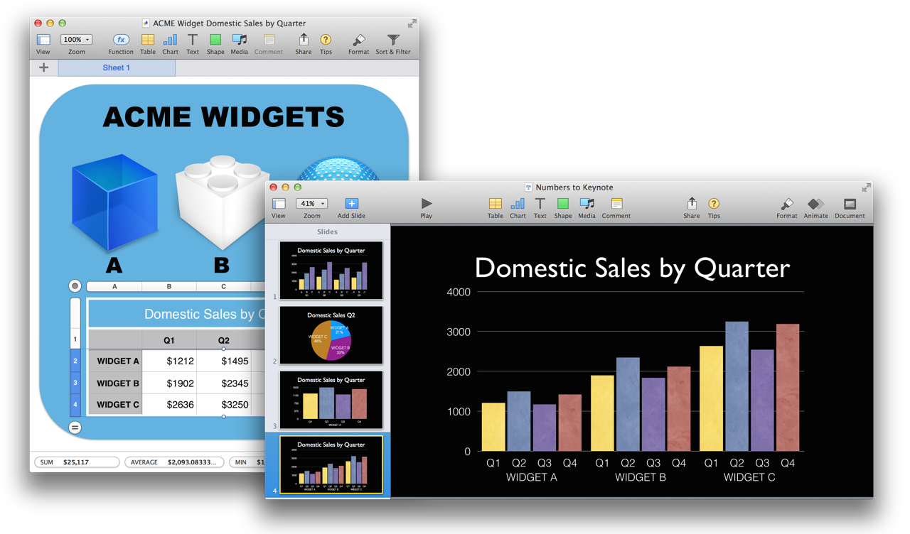

Here’s an example AppleScript script that transforms the selected row data in a Numbers table to a vertical bar chart on a new slide in Keynote.

DO THIS ►DOWNLOAD the simple example Numbers document.
Simply select one or more rows in a Numbers table and run the script. The row data will be extracted and used to create a vertical bar chart on a new slide in the frontmost Keynote document. In addition, the name of the selected table will be used as the title for the created slide.
New Bar Chart in Keynote using Data From Selected Rows
01
tellapplication "Numbers"
02
activate
03
try
04
-- check for document
05
if not (existsdocument 1) then errornumber 1000
06
telldocument 1
07
try -- check for selected table
08
tellactive sheet
09
set theselectedTableto ¬
10
(the firsttablewhoseclassofselection rangeisrange)
11
end tell
12
on error
13
errornumber 1001
14
end try
15
tellselectedTable
16
setthisTableNameto itsname
17
-- get the count fo the various headers and footers
18
set theheadercolumnCounttoheader column count
19
set theheaderrowCounttoheader row count
20
set thefooterrowCounttofooter row count
21
-- store references to the intersecting columns and rows
22
settheseRowsto therowsof theselection range
23
settheseColumnsto thecolumnsof theselection range
24
-- get the row and column counts
25
setrowCountto (countoftheseRows)
26
setcolumnCountto (countoftheseColumns)
27
-- get the column names
28
setcolumnNamesto {}
29
ifheadercolumnCountis 1 then
30
repeat withifrom 1 to thecountoftheseColumns
31
setthisValueto (thevalueof the firstcellof (itemioftheseColumns))
32
ifthisValueis not missing value then
33
set the end ofcolumnNamestothisValue
34
end if
35
end repeat
36
else -- use the Column IDs
37
repeat withifrom 1 to thecountoftheseColumns
38
setthisValueto the name of (itemioftheseColumns)
39
ifthisValueis notmissing valuethen
40
set the end ofcolumnNamestothisValue
41
end if
42
end repeat
43
end if
44
-- get the row names
45
setrowNamesto {}
46
ifheaderrowCountis 1 then
47
repeat withifrom 1 to thecountoftheseRows
48
setthisValueto (thevalueof the firstcellof (itemioftheseRows))
DOWNLOAD an example Numbers document containing a more complex table.
DISCLAIMER
THIS WEBSITE IS NOT HOSTED BY APPLE INC.
Mention of third-party websites and products is for informational purposes only and constitutes neither an endorsement nor a recommendation. MACOSXAUTOMATION.COM assumes no responsibility with regard to the selection, performance or use of information or products found at third-party websites. MACOSXAUTOMATION.COM provides this only as a convenience to our users. MACOSXAUTOMATION.COM has not tested the information found on these sites and makes no representations regarding its accuracy or reliability. There are risks inherent in the use of any information or products found on the Internet, and MACOSXAUTOMATION.COM assumes no responsibility in this regard. Please understand that a third-party site is independent from MACOSXAUTOMATION.COM and that MACOSXAUTOMATION.COM has no control over the content on that website. Please contact the vendor for additional information.